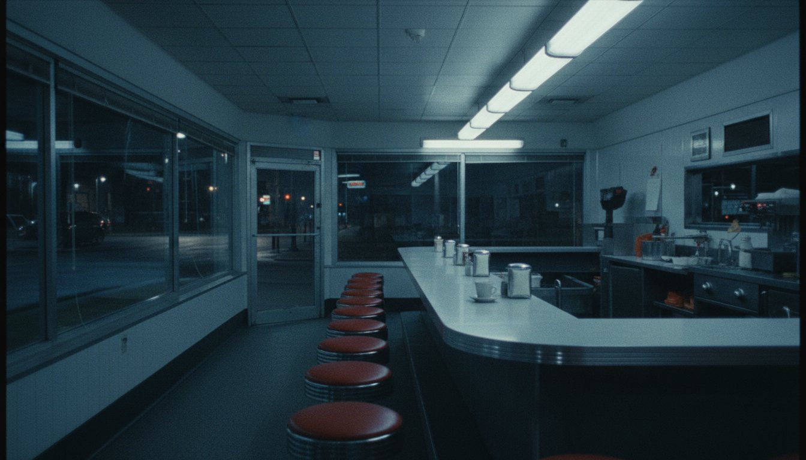

About
Ten years of closing shifts. Five pieces. One list on the back of a receipt.

The list said: a jacket a bus driver can see at four in the morning. Pants with the apron built in, that stop being work pants when you snap the panel off. A shirt with somewhere to put the pen. A bag for the whole night. A cap for the hour when everything is funny.
We shot all of it on the walk between the last shutter and the first coffee, in the only light we ever saw it in.
About this site
Night Shift Supply is a fictional label. Angel Valle designed the brand, wrote the copy, directed the AI-generated garments and photography, and built the site as a portfolio piece. No product exists and nothing is for sale. The clock is real. More work by Angel.